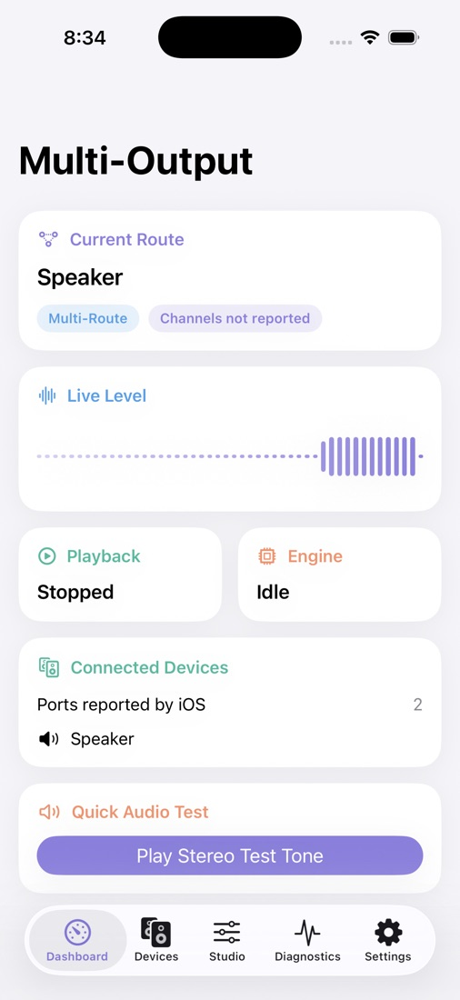
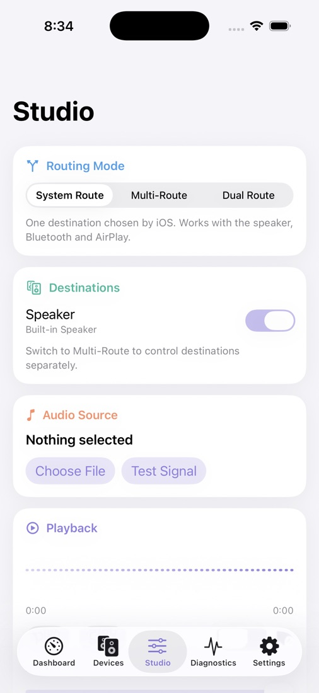
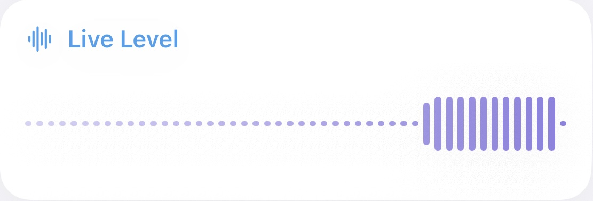
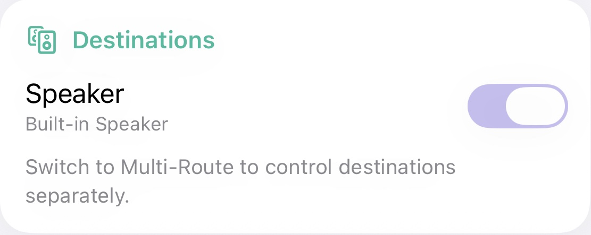
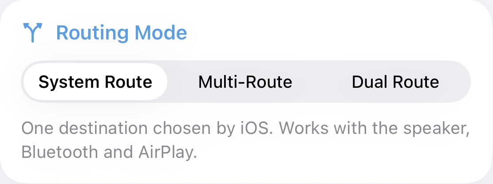

One sound, every output your iPhone allows
A free, open-source app that plays audio from inside the app through wired outputs together.
Version 0.1.0, a prerelease. It runs in the iOS Simulator but hasn't been tested on a real iPhone yet.
Built on what iOS really offers
Three routing modes follow Apple's rules for each output type. Choose a file or a generated test tone, then check every route in the Test Lab.


Nothing on screen is made up
The meter moves only when audio is measured. The destinations come from iOS, and if iOS doesn't report something, the app says so.


Several Bluetooth headphones? No
A Mac can group them. iOS gives apps no way to do it, so this app can't either. These routes can.
A dual-link Bluetooth transmitter
Plug one into the iPhone's USB-C port. The iPhone sees one output, the transmitter feeds two headphones, and all iPhone sound comes through. Check that it's rated for two headphones.
Your Mac as the hub
AirPlay from iPhone to a Mac, with the Mac's Multi-Output Device playing to all your headphones. We haven't tested this, and expect some delay.
Apple's Share Audio
Sends iPhone sound to a second pair of supported AirPods or Beats. It's built into iOS and works with every app.
First, download the IPA
iPhones won't install it straight from this page, because it isn't signed yet. Save it to a computer.
- FileMultiOutput-unsigned.ipa
- Size278 KB
- Version0.1.0 prerelease
- Runs oniOS 17 or later
- Dual RouteiOS 26.2 or later
Next, sign it on a computer
Connect your iPhone by cable, open the IPA in Sideloadly and sign in with an Apple ID. A spare Apple ID is the safest choice.
- ComputerMac or Windows PC
- Signing toolSideloadly or AltStore
- AccountFree Apple ID
- Lasts7 days, then sign again
Then, trust it on your iPhone
Turn on Developer Mode and let the iPhone restart. Then trust your Apple ID in Settings.
- Privacy & SecurityDeveloper Mode: On
- GeneralVPN & Device Management
- Your Apple IDTrust
Now, choose your outputs
Open Studio, pick a routing mode, and play a file or a test tone. Sound from other apps stays on the iPhone's normal output.

- Download
- Sign
- Trust
- Play
What iOS allows,
and what it refuses
Download the IPA
- Multi-RouteUSB and wired headphones
- Multi-RouteUSB and HDMI
- Multi-RouteLine out and headphones
- Dual RouteSpeaker and a wired headsetiOS 26.2 or later
- Dual RouteSpeaker and a Bluetooth headsetiOS 26.2 or later, hands-free or LE quality
- System RouteAny one outputIncludes Bluetooth and AirPlay through Apple's picker
- Multi-RouteSpeaker and a wired outputiOS uses the speaker only when nothing else is connected
- Multi-RouteBluetooth music mode and anything elseA2DP can't be turned on in multi-route
- BluetoothSeveral Bluetooth headphones at onceA Mac can group them, but iOS apps can't
- All soundPlaying other apps' sound through this appiOS apps can't capture audio from other apps
- All soundA system-wide virtual deviceRouting exists only inside this app
- AirPlayAirPlay with a local outputNot on Apple's eligible list
- VolumeHardware volume for each outputiOS doesn't expose it
- SyncClock sync between outputsiOS has no per-output clock or drift correction, so some delay is possible
- Fair questions
- No. iOS only lets an app route the sound it plays itself. Spotify, YouTube and calls stay on the iPhone's normal output. This app plays audio files you choose and its own test tones.
- Not through this or any other app using Apple's public APIs. A dual-link transmitter, a Mac acting as a hub or Share Audio are the routes that can work.
- iPhones only install signed apps. A tap-to-install link needs a paid Apple Developer account and every iPhone registered first. TestFlight and the App Store need a paid account too.
- That's how long a free Apple ID's signature lasts. Sign the IPA again with Sideloadly to keep using it.
- Not yet. Its 32 unit tests pass and playback runs in the iOS Simulator, but simultaneous output on real hardware is unconfirmed. Share your results if you try it.
- No. It uses public Apple APIs only, has no dependencies and collects nothing. The source is on GitHub under the MIT licence.